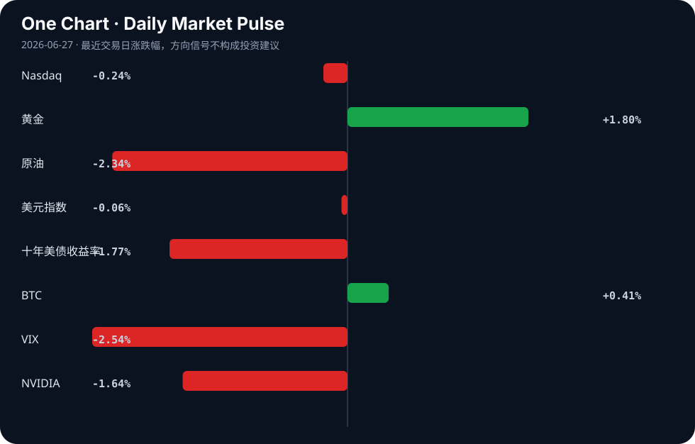

Daily Intelligence
2026-06-27｜Saturday
Today’s Thesis｜今日一句话
AI发展正从模型能力竞赛转向基础设施与监管瓶颈竞赛，硬件重构与主权妥协将成为决定AI落地速度的核心变量。
① Executive Summary｜30 秒
- AI：Anthropic寻求与美国政府达成解除模型限制协议[A5]，苹果因端侧AI内存危机跳过M6直指M7[A15]，AI从纯算法竞赛进入合规与硬件重构期。
- 商业：AI概念股下挫拖累华尔街大盘[B9]，但地方经济正将“词元经济”作为招商引资新引擎[B13]，资本在宏观犹豫中寻找微观实体落地。
- 宏观：IMF支持美联储放弃僵化前瞻指引[B12]，美元随原油走弱[B22]，市场在通胀缓解与劳动力市场考验（NFP）间寻找新平衡[B3]。
② AI Daily
Anthropic与主权权力的制度性妥协
What Happened Anthropic正推进与美国政府达成协议，以解除对AI模型的限制[A5]。 Why It Matters 这标志着AI头部实验室与国家机器的深度绑定。安全对齐不再仅是技术问题，而是换取商业运行许可的政治筹码。 Second-order Effect 合规门槛提高 → 中小开源模型生存空间受挤压 → 开源社区被迫组建防御联盟（如Linux基金会发起Akrites项目抵御AI剥削[A14]）。
端侧AI的内存墙与硬件跳代
What Happened 苹果遭遇“AI内存危机”[A1]，决定在2027款Mac中跳过高阶M6，直接搭载专注AI的M7芯片[A15]。 Why It Matters 算力膨胀速度远超端侧内存带宽增速，传统架构已无法承载本地大模型，硬件迭代必须为AI让路重构。 Second-order Effect 端侧模型参数膨胀 → 内存危机爆发 → 芯片架构跳代(M6至M7) → 边缘计算硬件溢价上升，供应链价值向存储与封装转移。
搜索入口的幻觉反噬与护栏基建
What Happened DuckDuckGo引入AI摘要后，误称特朗普死于狂犬病[A22]；同期AgentKits推出60个带护栏的生产级智能体蓝图[A11]。 Why It Matters 生成式AI直接接入搜索入口正在摧毁信息验证机制，公众信任度下降将倒逼“护栏”成为独立且庞大的基础设施赛道。 Second-order Effect AI幻觉引发公共事件 → 搜索引擎信任赤字 → 护栏/验证工具需求激增 → 无护栏AI应用面临监管熔断。
③ Business Daily
科技与制造
苹果跳过M6转向AI专用M7芯片[A15]，本田在美启动AI数据中心电池生产（从EV战略转向）[A23]。制造端正在响应算力与电力的双重基础设施需求，硬件产能分配从终端消费品向算力基础设施倾斜。
金融与能源
SpaceX在完成250亿美元债务交易数天后遭债券抛售[A10]，AI股票下挫使华尔街面临周度亏损[B9]。同时，AI推高电力需求的预期引发居民电费上涨担忧[A4]，PIC则注资氢能公司以促进绿色制造[B16]。资本正在对高估值AI概念股进行风险重估，同时向能源解法溢出。
④ Macro Observation｜机制分析
世界正在发生什么？ 全球主要亚洲与欧洲市场呈现负面趋势[B15]，华尔街因AI股拖累走弱[B9]，但十年期美债收益率下行与原油价格走弱正释放通胀缓解信号[B10][B22]。
为什么发生？ 美联储转向更鹰派但放弃僵化前瞻指引[B8][B12]，市场正在重新定价“数据依赖”的利率路径。AI产业从概念期进入基础设施期，资本支出巨大但短期回报不明（如SpaceX债券抛售[A10]），引发反身性抛售。
资本如何流动？ 资本正从高估值AI概念股撤出[B9]，流向具有确定性的微观实体（如词元经济招商引资[B13]、广东AI产业营商环境建设[B1]）以及能源配套（氢能[A16]、数据中心电池[A23]）。
接下来关注什么？ NFP就业数据将成为美元走势的试金石[B3]。若劳动力市场依旧强劲，鹰派预期将再起，进一步挤压高久期AI资产；若走弱，则宏观宽松预期将再次托底科技股。
⑤ Signal Dashboard
| 指标 | 最新值 | 今日 | 信号 |
|---|---|---|---|
| Nasdaq | 25,297.62 | ↓ -0.24% | 中性 |
| 黄金 | 4,103.00 | ↑ +1.80% | 避险/通胀对冲增强 |
| 原油 | 70.24 | ↓ -2.34% | 通胀压力缓解 |
| 美元指数 | 101.37 | ↓ -0.06% | 中性 |
| 十年美债收益率 | 4.37 | ↓ -1.77% | 利好久期资产 |
| BTC | 59,963.75 | ↑ +0.41% | 风险偏好改善 |
| VIX | 18.41 | ↓ -2.54% | 风险偏好改善 |
| NVIDIA | 192.53 | ↓ -1.64% | 风险偏好降温 |
⑥ Deep Insight
算力主权与硬件重构：AI竞赛的隐秘下半场
当我们凝视AI的演进时，往往被模型参数的Scaling Law所吸引，却忽视了正在成型的物理与制度天花板。今日的信号强烈暗示：AI竞赛的决定性因素正在从算法规模转向硬件重构与算力主权。
首先是不可逾越的“内存墙”。苹果因AI内存危机不仅成为社区嘲讽的对象（甚至传出带回初代Apple I的荒诞叙事[A1]），更在产品规划上做出了激进反应——跳过高阶M6，直接为2027款Mac部署AI专用的M7芯片[A15]。这并非简单的产品节奏调整，而是端侧架构的底层重构。传统冯诺依曼架构下，内存带宽与容量的增速远不及模型参数膨胀，算力闲置等待数据喂入已成为最大浪费。当苹果这样的软硬一体巨头被迫以跳代来应对时，意味着整个行业必须将资本与研发重心向存储架构、封装技术（如HBM及更激进互联方案）倾斜。硬件的溢价权将从纯算力核心向内存子系统转移。
其次是“电力墙”与能源主权的浮现。AI的尽头是能源并非虚言。当AI算力需求开始推高居民电费账单时[A4]，产业扩张已触及民生底线。本田将美国的电池产能从EV转向AI数据中心[A23]，以及资本向氢能等绿色制造领域的涌入[A16]，揭示了新的资本配置逻辑：谁掌握了适配AI的稳定电力供给，谁就掌握了下一个十年的算力主权。这不再是单纯的科技股叙事，而是重资产、长周期的能源与基建叙事。
最后是“合规墙”与政治主权的交易。Anthropic寻求与美国政府达成协议以解除模型限制[A5]，这是科技巨头与国家机器的深度绑定。安全合规不再是研发成本，而是进入市场的牌照。这种制度性妥协将引发反身性：合规门槛越高，未合规的开源生态生存空间越窄，迫使Linux基金会等组织发起Akrites项目以抵御AI对开源的剥削[A14]。算法的控制权正演变为地缘政治的筹码。
反方观点：算法效率的突破可能推迟硬件重构的必要性。若量化、蒸馏或全新稀疏架构能在现有内存与电力约束下实现等效智能，则硬件与能源的溢价将被削弱。
证伪条件：若未来12个月内，消费级端侧设备无需架构跳代（如仍沿用传统内存总线），即可流畅运行参数量超越当前旗舰10倍的本地模型，上述“硬件重构主导AI落地”的论点即被证伪。
⑦ Tomorrow Watch
1. 美国NFP就业数据发布，验证劳动力市场降温与否及对美联储路径的修正[B3]。
2. Anthropic与美国政府解除AI模型限制协议的官方声明或细节披露[A5]。
3. 苹果M7芯片架构流片或供应链信息，确认内存架构重构方向[A15]。
4. SpaceX债券价格是否止跌企稳，测试高债务AI/航天资本市场的承压极限[A10]。
5. DuckDuckGo对AI摘要幻觉事件（特朗普死因误报）的官方回应或产品调整[A22]。
⑧ One Chart

图表显示风险偏好在宏观与微观层面出现分化：宏观层面，十年期美债收益率下行与VIX回落共同指向避险情绪缓和与久期资产回暖；但在微观层面，以NVIDIA为代表的AI核心资产与纳指同步微跌，暗示资本正在从纯AI概念中阶段性撤离，这种分化表明市场在为宏观宽松定价的同时，正在重估AI的商业化兑现周期。
⑨ Quote of the Day
“The future is already here — it is just not evenly distributed.”
— William Gibson
⑩ Action Items｜今天值得思考什么
1. 追踪 Anthropic 与美国政府的协议细节，评估合规壁垒对国内大模型出海的映射效应。
2. 验证 苹果 M7 芯片的内存带宽规格，确认端侧 AI 是否已彻底抛弃传统内存互联方案。
3. 比较 本田 EV 电池与 AI 数据中心电池的产能切换成本，测算能源与算力置换的毛利率差异。
4. 关注 NFP 数据对美联储前瞻指引的修正，验证 IMF 所支持的“数据依赖”路径对久期资产的实际影响。
5. 思考 DuckDuckGo 幻觉事件对搜索入口信任度的长期侵蚀，评估护栏与验证工具（如 AgentKits）的独立商业化空间。
信息边界
本报告事实来源覆盖 Hacker News、Google News 及部分主流财经媒体，时效截至 2026年6月26日收盘及晚间资讯。市场数据反映最近交易日收盘状况。部分新闻来源为二手聚合，重要判断（如 Anthropic 政府协议、苹果芯片跳代）需提醒读者回到原文验证。
Sources
AI
- A1：Due to the AI memory crisis, Apple is bringing back the original Apple I — Hacker News · AI
- A4：What the Tech: Could artificial intelligence raise your electric bill? - WRDW — Google News · AI
- A5：Anthropic Moves Toward Deal with US to Lift Curbs on AI Models — Hacker News · AI
- A10：SpaceX bonds sell off days after AI and rocket group's $25B debt deal — Hacker News · AI
- A11：AgentKits – 60 production-ready AI agent blueprints with guardrails — Hacker News · AI
- A14：Linux Foundation and Others Launch Akrites Defend Open-Source from AI Exploits — Hacker News · AI
- A15：2027 Macs to Get AI-Focused M7 Chips as Apple Skips High-End M6 — Hacker News · AI
- [A16：Concrete Problems in AI Safety – Dario Amodei (2016) [video]](https://www.youtube.com/watch?v=F25i0sgrp9M) — Hacker News · AI
- A22：DuckDuckGo, Unable to Resist AI's Pull, Mistakenly Claims Trump Died of Rabies — Hacker News · AI
- A23：Honda starts AI data center battery production in US after EV pivot - Nikkei Asia — Google News · AI
Business & Macro
- B1：AI产业突破3000亿，广东应如何优化营商环境？ - 新浪财经 — Google News · 行业
- B3：Forecasting the upcoming week: US Dollar faces labor market test as NFP takes center stage - Bitget — Google News · Markets Policy
- B8：Euro H2 2026 Outlook: EUR/USD Tests Pivotal Support as Fed Turns More Hawkish - FOREX.com — Google News · Markets Policy
- B9：Most of Wall Street rises, but sinking AI stocks keep it on track for a losing week - Audacy — Google News · Technology Business
- B10：Health and well-being – Multiple Benefits of Energy Efficiency for Business – Analysis - IEA – International Energy Agency — Google News · Technology Business
- B12：IMF Backs Fed's Shift from Rigid Forward Guidance - Devdiscourse — Google News · Markets Policy
- B13：点咖啡送Token券 词元经济成多地招商引资新引擎 - 新浪财经 — Google News · 行业
- B15：Major Asian & European markets display negative trend - News On AIR — Google News · Markets Policy
- B16：PIC Backs Hydrogen Firm to Boost Green Manufacturing - Devdiscourse — Google News · Technology Business
- B22：Dollar Weakens with Crude Oil Prices - TradingView — Google News · Markets Policy